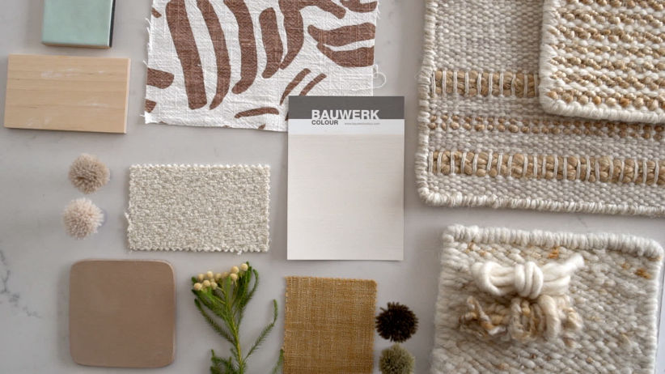
The Client: Coral and Hive (A boutique rug studio in Cape Town and London).
Our Role: Director, Cinematographer and Editor (Munjiri Videos).
The Deliverables: Brand Video
Coral and Hive make custom, handwoven rugs from natural fibres, working with skilled makers in Cape Town, South Africa and family-run looms in India. Their pieces offer an alternative to mass-produced interiors, with a focus on natural materials, thoughtful design and traditional craft.
But when you’re looking at a finished rug, it’s easy to miss everything that went into making it.
Coral and Hive wanted to bring that story to life, the materials, the weaving, the skill and, most importantly, the people behind each piece. They needed a film that could give their customers and interior design clients a better sense of where their rugs come from and who makes them.
A big part of Coral & Hive's world comes from the Karoo too. Jeannine the founder of Coral and Hive draws inspiration from its soft colours, unique and characterful plants and the slower pace of life there. We knew that feeling also needed to make its way into the film.
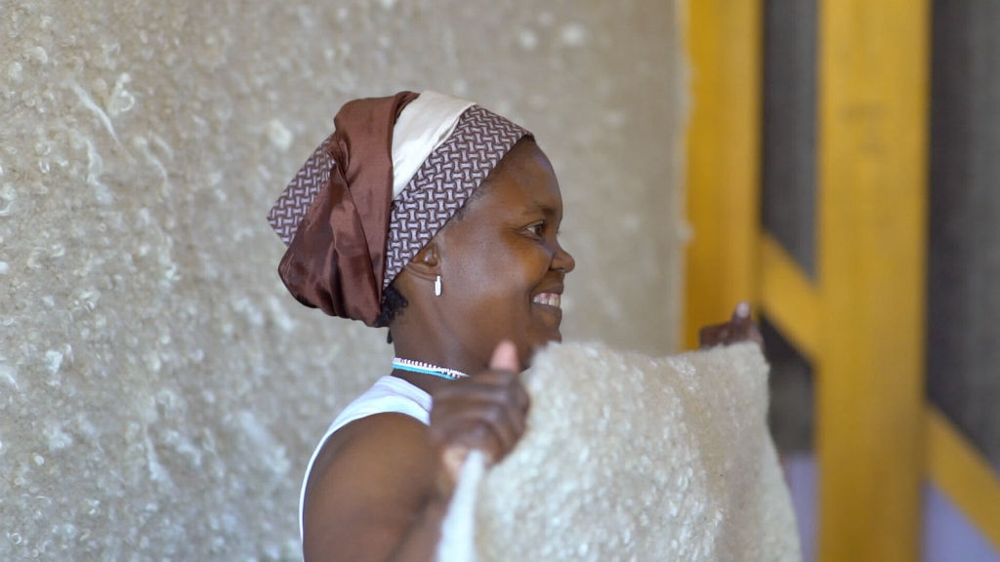
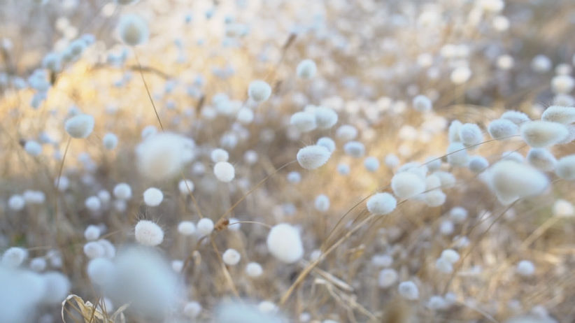
With this video for Coral and Hive we decided early on that the people needed to be at the centre of the film.
Rather than making a polished product video, we wanted to take a more documentary-style approach and let the makers tell the story themselves. We spent time in the studio filming the team at work, talking to them about the weaving process and finding out what the work means to them.
We wanted the film to feel as natural as the work itself. So instead of staging every shot, we kept things relaxed, giving people space to carry on with what they do every day.
For our shots we got close to the materials, hands and movement of the looms, using warm natural light and plenty of detail to make the rugs feel like you could almost touch them.
And we let the studio sound become part of the story too! The rhythm of the looms, conversations, singing and all the little sounds of people working together.
We really wanted it to make someone who has never stepped into the studio feel like they had.
We also travelled into the Karoo to film the landscapes and nature that inspire Jeannine's work. The muted colours, beautiful unique plants and of course the goats!
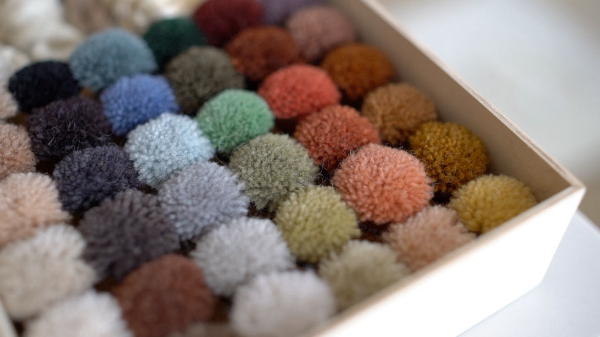
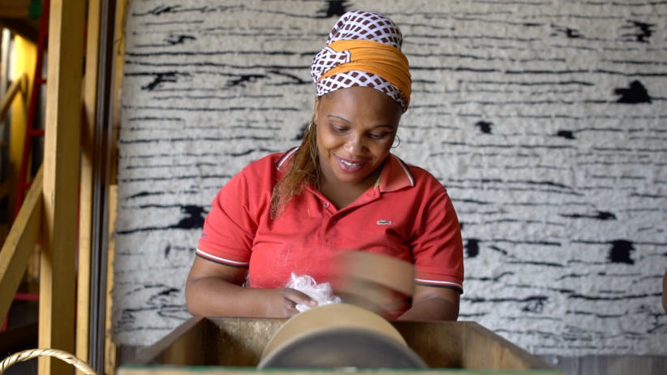
We kept the shoot small and relaxed, which gave us plenty of time to get to know the team and let them settle into having cameras around.
We filmed the weaving as it happened, moving between wider shots of the studio and close-ups of the hands, fibres and looms. We also spent time talking to the team and recording interviews, giving them space to explain what they do in their own words.
There was no need to over-direct things. Once people got back into their work, we could step back and look for the little moments the rhythm of the looms, people chatting and singing, and the concentration that goes into each piece.
A lot of the filming was about waiting for those natural moments rather than trying to create them.

The more time we spent with the team, the more obvious it became that the rugs were only part of the story. We spoke to several of the weavers about their work, what they had learnt and what being part of Coral & Hive meant to them. One of the things that came through most strongly was the pride people had in their craft.
We also heard from one of the weavers who had moved from the Eastern Cape. She told us that, through this work, she had been able to build and own her own home.
Which was so cool and exactly the kind of story we wanted the film to make space for.
Alongside those bigger stories, we wanted to capture the many hands involved in making each rug.
As one of the team put it, “It’s not just a rug. It’s a lot of people’s handwork that’s inside that.”
That idea became one of the threads running through the whole film.
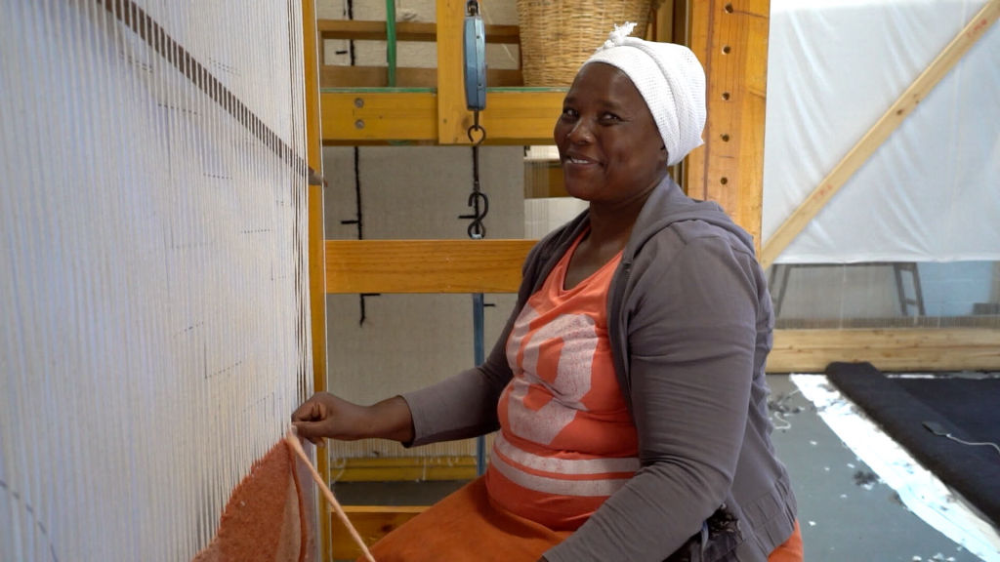
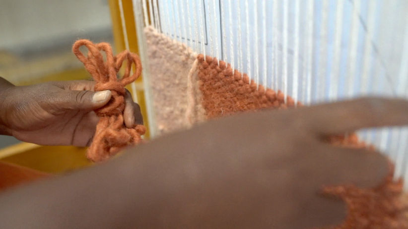
We created a 2-minute documentary-style brand film, alongside a series of shorter videos for social media.
The finished film brings together the people, materials and process behind Coral & Hive’s rugs, giving customers and interior designers a glimpse inside the weaving studio and a better sense of where each piece comes from. Rather than simply showing the finished rugs, the film lets people meet the makers and hear their stories for themselves.
The result is a piece that Coral & Hive can use to introduce people to the world behind their rugs, while the shorter clips give them plenty of moments to share across social media.
Most importantly, we wanted someone watching the film to come away thinking about the people behind the rug, not just the rug itself.
If you would like to see more examples of our videos check out our portfolio.
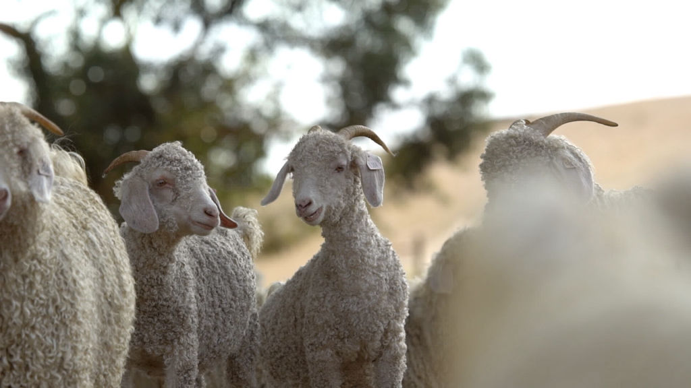
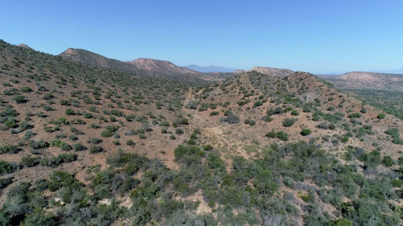
If you have a creative brand that you have shaped with care, but feel overwhelmed by the video side of things, we would love to help. We're Katy and Eugene and we take your marketing goals and turn them into honest down-to-earth videos that handle the hard work for you online. We take care of all the research, scripting, planning, and editing while keeping you completely relaxed on camera. We work internationally, but mostly in Portugal and South Africa. Creating a beautiful visual world that your people can't wait to step into, while you stay present in your business.
katy@munjiri.com
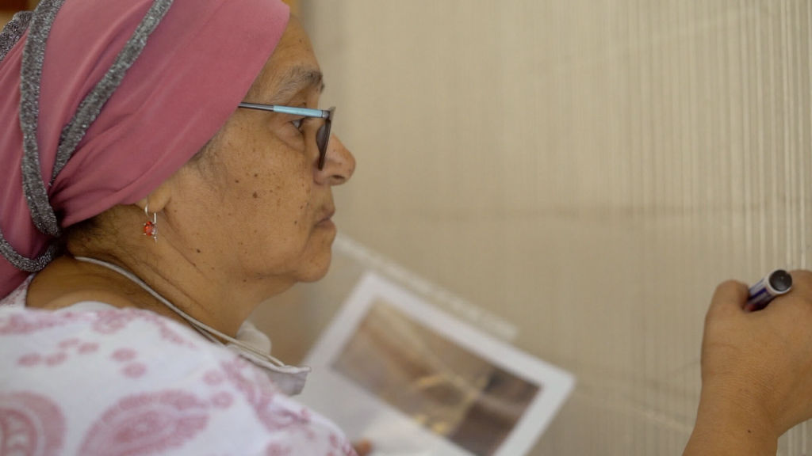
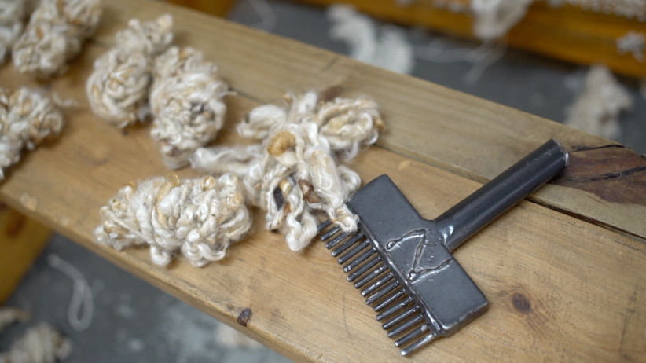
Blog post by Katy co-founder of Munjiri Videos (I'm one of the two videographer's helping businesses share what they do!)